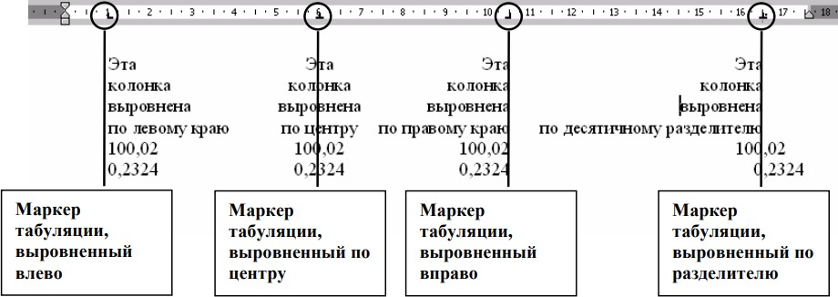

Табуляция. Списки
Табуляция
Понятие табуляции
Табуляция — это перемещение текста, находящегося справа от курсора и самого курсора, на фиксированное расстояние или к определенному положению на линейке.
Табуляция позволяет изменять отступы и производить выравнивание фрагментов текста в строке. При нажатии клавиши TAB курсор (и любой текст справа от него) перемещается к следующей позиции табуляции или на фиксированное расстояние. По умолчанию MS Word устанавливает позиции табуляции через каждые 0,5 дюйма (1.27 см) по всей ширине страницы. Можно изменять расположение позиций табуляции и управлять способом выравнивания текста по позиции табуляции
Типы позиций табуляции
Существует пять основных типа позиций табуляции:
- Выравнивание по левому краю. Левый край текста выравнивается по позиции табуляции. В программе MS Word по умолчанию позиции табуляции выровнены влево.
- Выравнивание по правому краю. Правый край текста выравнивается по позиции табуляции.
- Выравнивание по центру. Текст выравнивается по центру по позиции табуляции.
- Выравнивание по десятичному разделителю. Десятичный разделитель (точка или запятая) выравнивается по позиции табуляции (используется для выравнивания колонок или чисел).
- С чертой. Вставка вертикальной черты в позиции табуляции. Не используется для выравнивания текста.

Рис. Типы позиций табуляции
Установка позиций табуляции
Вы можете использовать табуляцию, чтобы переместить текст в точные и предустановленные позиции на строке. Для форматирования текста с помощью табуляции, необходимо предварительно разместить на Линейке позиции табуляции, а затем воспользоваться клавишей TAB для перемещения к заданным позициям.
Списки
Список — это набор абзацев (элементов списка), особым образом отформатированных с помощью номеров или специальных маркеров.
Возможно использование списков двух типов: маркированных и нумерованных.
Пример. Маркированный список.
- табурет;
- тумба;
- шкаф;
- диван.
Пример. Нумерованный список
- Табурет.
- Тумба.
- Шкаф.
- Диван.
Нумерованные могут быть одноуровневыми и многоуровыми списками.
При создании нумерованного списка поддерживается автоматическая нумерация каждого абзаца, т.е. при удалении/добавлении одного (или более) абзаца MS Word автоматически пересчитывает нумерацию.
При создании маркированного списка маркеры появляются перед каждым абзацем, до тех пор, пока вы не откажетесь от маркированного списка.
Вы можете добавить нумерацию или маркеры, с помощью кнопок в группе Абзац на вкладке Главная.
При создании маркированного или нумерованного списка можно выполнить любое из следующих действий:
- использовать форматы маркеров и нумерации по умолчанию для списков, настраивать списки или выбирать другие форматы из библиотек маркеров и нумерации;
- форматировать маркеры и нумерацию так, чтобы они отличались от текста в списке, например, изменять его цвет для всего списка, не меняя цвет текста в списке;
- делать документ более наглядными и привлекательными, добавляя список с маркерами-рисунками.